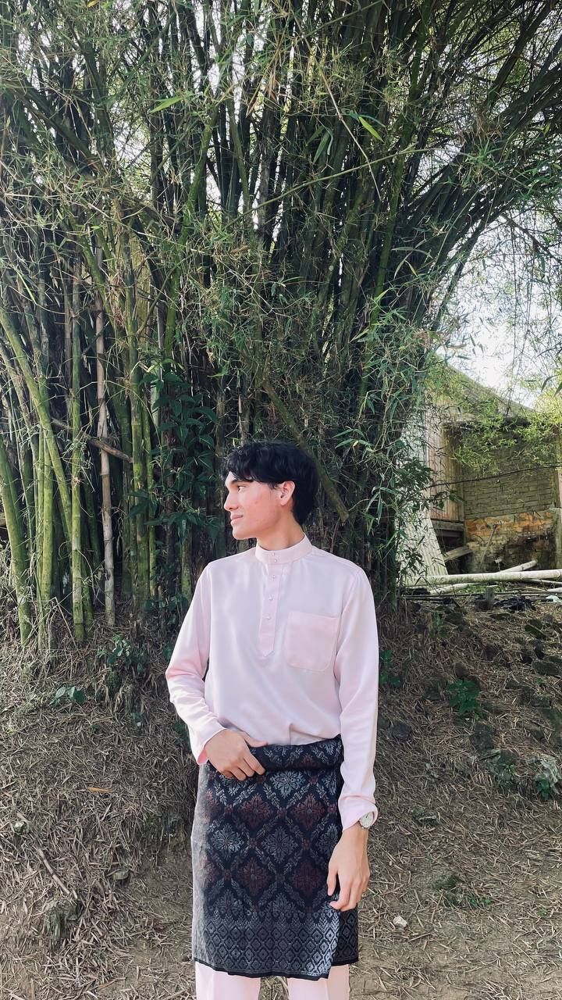

Hello! My name is Muhammad Danish Irfan Bin Muhaizul, but most people call me Nish. I am 21 years old and proudly hail from Hulu Selangor, Selangor. Currently, I am pursuing a Bachelor of Computer Science at Universiti Teknologi MARA (UiTM), Cawangan Perak, Kampus Tapah. Previously, I completed my Foundation in Science at UiTM Dengkil. Motivated by a passion for technologies, and continuous learning, I decided to further my studies in Computer Science, aiming to become a skilled and forward-thinking developer. Beyond academics and tech, I enjoy spending my free time watching anime, movies, and TV shows, which help me relax. I'm always eager to explore new technologies, sharpen my skills, and grow both personally and professionally!